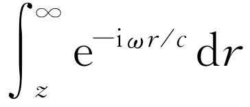
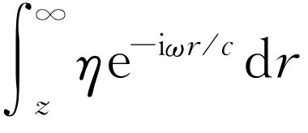

本章是上一章的继续，虽然名字由干涉 变为衍射 ．至今没有人能令人满意地解释干涉与衍射之间的区别。这只是一个用法问题，它们之间在物理上并没有明确的重大区别。粗略地讲，我们能做的至多是说，当只有几个（比如说两个）源干涉时，其结果常称为干涉，而当源很多时，则衍射一词似乎更常用。因而，我们将不去管它是干涉还是衍射，而从上一章所述问题中断的地方继续下去。
我们现在要讨论这样的情形：有n 个等间距的振子，振幅都相同，但彼此间相位不同，这或者是由于激励时不同相，或者是由于从某一个角度去观察它们从而延迟时间有所不同所致。不管怎么样，我们必须做这样的加法
R =A ［cos ωt +cos（ωt +φ ）+cos（ωt +2φ ）+…+cos（ωt +（n -1）φ ）］，（30.1）
其中φ 是在某一特定方向上观察时，一个振子与下一个振子的相位差。显然
现在必须把所有的项加起来。我们将用几何法来作。第一个矢量长为A ，相位为零。下一个矢量长也是A ，而相位等于φ 。再下一个矢量长还是A ，而相位等于2φ ，等等。显然，我们正在围成一个n 边的等角多边形（图30-1）。
这些矢量的顶点当然都在圆周上，于是只要求出这个圆的半径，就很容易求得净振幅。假定Q 是此圆的圆心，可以看出角OQS 正好就是相角φ （这是因为半径QS 跟 A 2 与QO 跟 A 1 构成相同的几何关系，所以它们之间构成的角也为φ ）。这样一来，半径r 必须满足A =2r sin φ /2，于是r 就确定下来了。但大角OQT 等于nφ ，因而可得A R =2r sin（nφ /2）。联立这两式以消去r ，得到
合强度就是
现在我们来分析这一表示式，并研究它的一些结果。首先，我们可用n =1来验证此式。结果是对的，I =I 0 。接着用n =2来验证它：将sin φ 写为sin φ =2sin φ /2cos φ /2，可得A R =2A cos φ /2，与式（29.12）一致。
促使我们考虑n 个源叠加的思想是，我们应该在某一方向得到比另一方向大得多的强度；即只有两个源存在时出现的一些邻近的极大，其强度将会变小。为了看出这一结果，作由式（30.3）得出的曲线，把n 当作很大的数，并在φ =0附近作图。首先，如果φ 确实为零，就得到0/0，但如果φ 是无穷小，两个正弦平方之比就是n 2 ，因为此时正弦与角度近似相等。这样，曲线极大值的强度就等于n 2 乘以一个振子的强度。这很容易明白，因为如果它们都同相位，则各小矢量间没有相对的角度，并且所有n 个矢量都相加，因而总振幅大了n 倍，强度大了n 2 倍。
当相位φ 增加时，两个正弦之比开始下降，而当nφ /2= π 时，它第一次达到零，因为sin π =0。换句话说，φ =2π /n 对应于曲线中的第一个极小值（图30-2）。按照图30-1中的箭头所发生的情形来说，第一个极小值发生在最后的箭头回到起点时；这意味着在所有箭头中累积起来的总角度，即第一个振子与最后一个振子之间总的相位差，必须是2π ，以完成一个圆周。
图30-2 大量等幅度振子的总强度与相角的函数关系
接下来看下一个极大值，我们曾希望它比第一个极大值小得多。我们不准备精确地求出极大的位置，因为式（30.3）的分子与分母是变化的，但当n 很大时，sin φ /2变化得比sin（nφ /2）慢得多，所以当sin（nφ /2）=1时与极大值很接近。sin2 （nφ /2）的下一个极大值出现在nφ /2=3π /2，或φ =3π /n 处。这对应于箭头已绕了一圈半。将φ =3π /n 代入公式以求得极大值的大小，发现分子中sin2 （3π /2）=1（因为这正是我们为什么取这一角度的原因），而分母中则有sin2 （3π /2n ），现在如果n 足够大，则此角度很小，正弦就等于角度；因而对一切实际问题来说，可以令sin（3π /2n ）=3π /2n 。这样我们求得这一极大的强度为I =4n 2 I 0 /9π 2 。但n 2 I 0 是主极大强度，因而I 为4/9π 2 乘以主极大强度，它只有主极大强度的0.047倍左右，不到5%！当然在更远处还有一些越来越小的强度。所以我们有了一个两边伴有很弱的次极大的尖锐的中央极大。
可以证明整个曲线包围的面积，包括所有小的突起在内，等于2π nI 0 ，即图30-2中虚线所表示的矩形面积的两倍。
现在我们来进一步考虑在不同情况下如何应用式（30.3），并试图理解所发生的情况。设所有的源都在一直线上，如图30-3所示。有n 个源，都相距d ，并假定相邻源之间的固有相位差是α 。当我们在与法线成θ 角的方向上观察时，如以前所讨论的，由于每两个相继源之间在时间上的延迟，就有一个附加的相位差2π d sin θ/λ 。因而
图30-3 以相角α s =sα 方式激励的n 个相同振子的直线状排列
首先来看α =0的情形。这就是说，所有的振子同相位，而我们想知道强度与θ 角的函数关系如何。为了找出它，只要将φ =kd sin θ 代入公式（30.3），看看会发生什么情况就行。首先，当φ =0时有一极大值。这意味着当所有的振子同相位时，在θ =0的方向上有一很大的强度。另一方面，一个有趣的问题是，第一个极小值在哪里？它出现在φ =2π /n 处。换句话说，当2π d sin θ /λ =2π /n 时，我们得到曲线的第一个极小值。若去掉这些2π 以使我们看得更清楚一些，则由它可得：
nd sin θ =λ .（30.5）
现在我们来理解为什么在该处得一极小值的物理意义。nd 是排列的总长度L 。参照图30-3，可得nd sin θ =L sin θ =Δ 。式（30.5）所说的就是当Δ 等于一个波长 时，我们得到一个极小值。那么，为什么当Δ=λ时会得到极小值？因为这时不同振子的贡献在相位上被均匀地分布在从0°到360°之间。图30-1中的箭头绕了一个整圈——我们在把所有方向上的相同的矢量加起来，所以总和为零。因而当我们处于使Δ =λ 的角度时，就得到一个极小值。这是第一个极小值。
式（30.3）还有一个重要的特性，就是如果φ 角增加2π 的任意倍，其值不变。所以我们将在φ =2π ，4π ，6π 等等处得到另一些主极大值。在这些主极大值附近又重复出现图30-2的图形。我们会自问，导致这另一些主极大值的几何条件是什么？条件是φ =2π m ，其中m 是任意整数。那就是2π d sin θ /λ =2π m 。除以2π ，得到
d sin θ =mλ .（30.6）
这看起来有点像另一个公式（30.5）。但并非如此，那个公式是nd sin θ =λ 。其区别是，在这里我们必须注视个别的源 ，当我们说d sin θ =mλ 时，就意味着我们处于使δ =mλ 的角度θ 。换句话说，此时每一个源都有一定贡献，而相邻源之间相位差为360°的整数倍，从而使贡献同相位 ，因为相位相差360°与同相位是一样的。所以它们的贡献都同相位，并产生上文讨论过的对应m =0的同样的极大值。次级凸起，即图形的整个形状，恰好与φ =0附近的相同，两边也有同样的一些极小值，等等。这样一来，这种排列就会向不同的方向发射光束，每一束都有一个很强的主极大值和若干个弱的“边瓣”。这些不同的强光束按照m 的值分别称为零级光束，一级光束，等等。m 称为光束的级 。
注意，如果d 小于λ ，式（30.6）除m =0外没有解，所以若间距太小的话，将只有一个可能的光束，即集中于θ =0处的零级光束（当然，在反方向也有光束）。为了得到次级主极大值，必须使排列的间距d 大于一个波长。
在技术上可以将天线与导线安排得使所有小振子（或天线）的相位相同。问题是对光我们是否也能这样做，以及如何做。现时我们还不能真正地建立起一个光频无线电台，并将它们用无限小的导线连接起来，以给定的相位激励它们。但有一个与之等效的很方便的方法。
假如我们有许多平行导线，彼此间隔相同的间距d ，并有一个很远（实际上是无限远）的无线电频源，它发射一个电场，此场以相同相位到达每一导线（源是那么远，以致对所有的导线来说时间的延迟都相同。有人会用曲线形排列来达到此点，但我们采用平面的情形）。于是外电场将驱使每一导线中的电子上、下运动。也就是说，从原来的源发射的场将激励电子上、下运动，这种运动电子就成了新的发射源 。从某一个源发出的光波能激起一块金属中的电子运动，而这些运动又产生了它们自己的波，这一现象称为散射。因而我们只要架起许多导线，使之间隔相等，并以远处的无线电频源激励它们，就能得到所需的情况，无需许多特殊的布线。如果投射是法向的，相位就相同，我们将正好得到刚讨论过的情况。因此，若导线间隔大于波长，就可在法向得到很强的散射强度，而在另外的某些方向也能得到由式（30.6）给出的很强的散射强度。
这个方法对光也适用 ！用一块平玻璃片代替导线，在其上刻以凹槽，使光在每个刻痕处的散射与玻璃的其余部分略有不同。如果我们将光照射在玻璃上，每个刻痕就成为一个源，假如使刻痕的间距很小，但不小于波长（要小于波长在技术上几乎是不可能的），那么我们就会预期产生一个十分奇怪的现象：光不仅会笔直地通过去，而且按刻痕间隔的大小，在某一有限的角度上也会出现强光束！这类东西实际上已制造出来，并在普遍使用，——它们被称为衍射光栅 。
有一种衍射光栅只是一片透明、无色的平板玻璃，其上刻有刻痕。每毫米常有几百条刻痕，它们被排列得非常仔细，使间距都相同。此光栅的效果可以用下述办法看出。用投影器将一竖直的光线（狭缝的像）投射到墙上。将光栅放进光束（使刻痕竖直），即可看到原来的光线仍在那里，但除此之外在两边还附加有另一个彩色的 明亮光斑。这无疑是光缝在一宽广角度上散开的像，因为式（30.6）中的角度θ 取决于λ ，而我们知道，不同颜色的光是与不同的频率，亦即不同的波长对应的。最长的可见光波长是红色的。由于d sin θ =λ ，它应有一较大的角度。事实上，我们确实发现红色在离开中心像较大的角度上！在另一边应也有一束光，我们在屏幕上也的确看到了。再者，当m =2时，式（30.6）还应有另一个解。我们的确看到那里有一个模模糊糊的很弱的光束，再过去甚至还有一些光束。
我们刚才论证过，所有这些光束应该是等强度的，但如今它们并非如此，而且事实上即使是左、右两边的第一级光束都不相等！原因是光栅被仔细地恰好做成这样。怎么做呢？如果光栅由宽度无限小、间隔均匀、非常细的刻痕组成，那么所有的强度的确会相等。但是，事实上，虽然这只是最简单的情形，我们也可以考虑一个由一对对天线组成的阵列，并且一对天线中的每一根都有一定的强度和相对相位。假使这样的话，就可能对不同的级得出不同的强度。光栅常刻成小“锯齿”形，以代替对称的小凹槽。小心地安排“锯齿”，可以使投向光谱某一特定级的光比另外的级更多。在实际光栅中，我们总希望在某一级上的光尽可能多。这似乎是招徕麻烦的事情，但却是很聪明的做法，因为它使光栅更有用了。
至此，我们讨论了所有源的相位相等的情况。但我们也有一个相邻源的相位相差α 时φ 的公式。那需要将天线绕成彼此间有一小的相移。对光能这样做吗？可以，我们很容易做到这一点。假如在无限远处有一光源，它处在一定的倾角上 使光以角θ in 入射，而我们想讨论以角θ out 出射的散射光。θ out 与上述的θ 相同，但θ in 则只是借以使每个源的相位不同：来自远处激励源的光先投射到一个刻痕，接着投射到下一个刻痕，等等，一个与下一个之间有一相移，此相移即为α =-d sin θ in /λ 。因而，对于入射光与出射光都有倾角的光栅，就有公式
我们来找找看，在这些情况下，在哪里能得到极强。当然，极强的条件是φ 应为2π 的整数倍。有几个有趣之点值得注意。
一个颇有趣的是与m =0对应的情况，其中d 小于λ ；实际上，这是唯一的解。在这种情况下，可得θ out =θ in ，这意味着光以与激励光栅的光同样的方向 出射（图30-4）。我们会认为光“直接透过去”了。不，我们所讲的是另一束光 。直接透过的光是来自原来的光源；我们所讲的则是由散射产生 的新的光。它说明散射光正沿着原来光的方向行进，事实上它会与之干涉——这是我们以后要研究的情形。
对同一情况还有另一个解。对于给定的θ in ，θ out 可以是θ in 的补角 。因此我们不仅可在与入射光束相同的方向上得到一光束，而且还可以在另一方向上得到一光束，如果仔细想一下，此光束位于入射角等于散射角 的方向上。这个光束称为反射光束 。
这样我们开始理解反射的基本机理：入射光使反射体中的原子发生运动，从而反射体就产生一束新的波 ，散射方向的一个解——当散射源的间距与波长相比很小时则为唯一的解——是使光出射的角度等于其入射的角度！
其次，我们来讨论当d →0时的特殊情况。这就是说，比如我们刚好有一块固体，其长度是有限的。另外，我们要使从一个散射源到下一个散射源的相移趋近于零。换句话说，我们在两根天线间放进越来越多的天线，以至于每个相位差变得很小，但天线的数目却以这种方式增加，使一端至另一端之间总的相位差为常数。我们来看一看当保持一端至另一端的相位差nφ 为常数（比如说nφ =Φ ），而让天线数目趋向无限多，从而每个相移φ 趋近于零时，式（30.3）将怎么样。但现在φ 很小，故sin φ =φ ，若我们仍把n 2 I 0 当作光束中央的最大强度I m 的话，则
这一极限情况如图30-2中所示。
在这种情况下，我们看到了与有限间隔d ＞λ 同样类型的图；所有边瓣实际上与以前相同，只是没有较高级的极大值。如果散射源都同相，我们就在θ out =0的方向上得一极大值，而在距离Δ 等于λ 时得一极小值，同有限的d 与n 的情况正好一样。因而若用积分代替累加，我们甚至可以分析散射源或振子连续 分布的情况。
作为一个例子，设有一长列振子，其电荷沿着排列方向振动（图30-5）。自这种排列发出的光的最大强度所在方向与直线垂直。在赤道平面的上、下有少量的强度，但很微弱。利用这一结果，我们就可以处理更复杂的情形了。假如我们有一系列这样的线，每一条线只在与线垂直的平面上产生光束。寻求发自一系列长导线（而不是无限小导线）的光在不同方向上的强度，与寻求发自无限小导线的光是同一个问题，只要我们限于在与导线垂直的中心平面上观察；因为这时我们所累加的正相当于来自每根长导线的贡献。这就是为什么我们实际上虽然只分析了小天线，却也可用于具有狭长槽的光栅的缘故。每个长槽只在自己的方向 [1] 产生效果，上、下则没有，但它们水平地相继排列，故在水平方向产生干涉。
这样，利用散射源在直线、平面和空间的不同分布，就能构成更多的复杂情形。我们首先所做的是考虑直线上的散射源，刚才我们已把分析推广到许多细长条；只需作必要的累加，将来自各散射源的贡献加起来，就能求出结果。其中的原理往往是同样的。
现在我们能够理解许多有趣的现象了。例如，考虑利用光栅来分离波长的情况。我们已注意到光栅可以使整个光谱散布在屏幕上，因而光栅可用作将光分成不同波长的仪器。其中有一个有趣的问题是：假如有两个频率略有不同或波长略有不同的源，问它们的波长要靠得多近才能使光栅不能分辨其中实际上有两个波长？红色与蓝色分得很清楚。但当一个波是红色的而另一个波略微更红一些，但非常接近，那么它们可以靠得多近？这叫做光栅的分辨本领 ，分析这个问题的一种方法如下。假定对某种颜色的光，我们恰巧在某个角度上得到其衍射光束的极大值。如果改变波长，相位2π d sin θ /λ 就不同，当然极大值就出现在不同的角度上。这就是红色与蓝色为什么被散开的原因。为了使我们能够看清楚它，角度必须差多少？如果两个极大值刚好彼此重合，我们当然不能看清楚它们。如果一个极大值与另一个极大值离得足够远，那么我们就能看到在光的分布中有一双峰或两个突起部分。为了能够恰好辨认出双峰，下述简单的判据（称为瑞利判据 ）是常用的，那就是：一个峰的第一极小值应位于另一个峰的极大值处。这样就很容易计算当一个极小值位于另一个极大值处时波长的差为多少。最好的计算方法是几何方法。
为了使波长λ ′有一极大值，距离Δ （图30-3）必须是nλ′ ，若我们正观察第m 级光束，则它为mnλ′ 。换句话说，2π d sin θ/λ′ =2π m ，故nd sin θ （即Δ ）为mλ′ 乘上n ，即mnλ′ 。对另一波长为λ 的光束，我们希望在该角度上有一极小值 。那就是说，我们希望Δ 恰好为比mnλ 多一个波长λ 。即Δ =mnλ +λ =mnλ ′。于是，若λ′ =λ +Δλ ，则得
比值λ /Δλ 叫做光栅的分辨本领 ；我们看到它等于光栅的总线数乘以级数。不难证明这个公式与频率差等于相干光的两条极端路径间的时间差的倒数这一公式等效 [2]
事实上，最好记住此式，因为一般的公式不仅适用于光栅，也适用于任何其他仪器，而特殊公式（30.9）则只在用光栅时适用。
现在我们来考虑分辨本领中的另一个问题。这与用来测定天空中的无线电辐射源的位置也就是测定辐射源角度大小的射电望远镜的天线有关。显然，如果使用任何一种老式天线，并发现了信号，我们并不能知道它们来自什么方向。我们很想知道辐射源在这里还是在那里。我们所能找到的一种方法是在澳大利亚草原上铺设一整列等间隔的偶极子天线。然后将引自这些天线的导线馈入同一接收器，使所有馈线中的时间延迟相等。这样接收器就同相位地收到来自所有偶极子的信号。也就是说，它将把来自每个偶极子的所有波同相位地加起来。那时将发生什么呢？若源恰好在装置的上面，处于无穷远或近乎无穷远，那么它的无线电波将同相位地激励所有的天线，因而它们将一起馈入接收器。
现在假设无线电辐射源从竖直方位略为偏过θ 角，则不同的天线收到的信号相位就略有不同。接收器将所有这些不同相位的信号加起来，若θ 角过大，就得零信号。试问此角有多大？答案 是：若角Δ /L =θ （图30-3）对应于360°的相移，即若Δ 等于波长λ ，就得零信号。这是因为所有的矢量贡献在一起形成了一个完整的正多边形，结果合矢量为零。故长为L 的天线装置所能分辨的最小的角是θ =λ /L 。注意，这种天线的接收花样恰好与把接收器转过来使之成为发射器时所得的强度分布相同。这是所谓倒易原理 的一个例子。事实上，下面的说法证明对天线的任何排列、任何角度等等都是普遍正确的：如果我们先以发射器来代替接收器得出在不同方向上所应有的相对强度，那么具有同样的外部布线、同样的天线排列的接收器的相对定向灵敏度就与它是一个发射器时的相对发射强度相同。
有些无线电天线可用另一种方法制成。我们不是把全部偶极子排成一长条直线，并附带许多馈送导线，而是把它们不排成直线，而排成曲线，并把接收器放在能探察到散射波的某一位置上。此曲线被巧妙地设计成这样：当无线电波从上面来时，被天线散射而形成新波，这些天线被排列成使散射波都同时到达接收器（图26-12）。换句话说，此曲线为抛物线 ；当源恰好在其轴上时，我们就在焦点处得到一个很强的强度。在这种情况下，我们就很清楚地了解到这种仪器的分辨本领是多少了。天线排成抛物线并非是主要的，那仅仅是使所有信号能无相对延迟地到达同一点而不必用馈线的一种方便的方法而已。这种仪器所能分辨的角仍为θ =λ /L ，其中L 为第一根天线与最后一根天线的距离。它并不取决于天线的间距，天线可以靠得很近，其实成一整块金属也行。当然这时我们是在描述望远装置的反射镜。我们居然找到了望远镜的分辨本领（有时分辨本领写成θ =1.22λ /L ，其中L 是望远镜的直径。它不是恰好为λ /L 的理由是这样：当得出θ =λ /L 时，我们假定所有各排偶极子的强度是相等的，但当我们有一圆形的望远镜时——望远镜通常是这个形状——从外边缘来的信号就没有那么多，因为它不像一个方块，在方块中沿着每一边缘都得到同样的强度。这里在边上得到的稍少一些，因为我们只用了望远镜的一部分；于是可以估计到其有效直径比实际直径略小一些，而这就是1.22因子所告诉我们的。无论如何，把分辨本领公式搞得这么精确似乎有点学究式 [3] ）。
以上所述就是将各种波叠加起来得到的一些干涉效应。还有许多其他例子，尽管我们还不理解其基本机理，但总有一天，甚至就在现在，我们能够理解这些干涉是怎么发生的。例如，当一光波投射至折射率为n 的材料表面时，比如说垂直入射，一部分光就被反射。反射的原因 我们此刻还不能理解；我们将在以后讨论。但是假如我们知道当光进入和离开折射介质时都有一部分被反射，那么当我们注视一光源在薄膜上反射时，就看到两个波的叠加；如果厚度足够小，这两个波就会发生干涉，或为相长干涉或为相消干涉，取决于相位的符号。比如说可以是这样：对于红光得到增强的反射，对于蓝光（它有不同的波长），或许就得到相消干涉的反射，于是我们看到明亮的红色反射光。如果改变厚度，也就是说如果注视另一处膜较厚的地方，情况可以反过来，红光干涉掉，而蓝光没有干涉掉，故它呈明亮的蓝色，也可呈绿色、黄色或别的什么叫不出名称的颜色。因而当我们注视薄膜时会看到彩色 ，而且当我们从不同角度注视时颜色会改变，因为我们意识到在不同角度上的计时是不同的。这样我们就立即懂得了其他五花八门的情形，包括在诸如油膜、肥皂泡等上面从不同角度上看到彩色等。它们的原理都一样：我们只是在叠加不同相位的波而已。
作为衍射的另一个重要的应用，可以提一下下列情形。假设我们使用一光栅，并在屏幕上看到衍射像。如果用的是单色光，像就应在某个特定位置上，其后还有各个较高级次的像。如果知道光的波长，由像的位置能够知道光栅上的刻线分得多开。由各个像的强度的差别，可得出光栅刻痕的形状，例如此光栅是用金属丝做成的，还是锯齿形凹口的，还是什么别的形状的，尽管我们不可能看见它们 。这一原理常被用来显示晶体中原子 的位置。唯一的复杂之点为晶体是三维的；它是原子的一种重复的三维排列。我们不能用普通的光，因为我们必须用波长小于原子间距的光，否则就得不到效应；所以必须用波长非常短的辐射，即X射线。因而，尽管我们绝不可能用肉眼看见原子，但借助于将X射线射入晶体并注意在不同级次反射有多强的办法，我们仍能决定内部原子的排列！正是用这种方法，我们知道了各种物质中的原子排列，这使我们可以在第1章中画出那些表示食盐等等的原子排列的图。我们以后将回到这一题目上来，并进行更详细的讨论，因此现在对这个最引人注意的概念就不再多说了。
现在我们来看一个非常有趣的情况。假设有一张开孔的不透明薄片，在它的一边有一束光。我们希望知道另一边光的强度如何。大多数人会说，光将穿过开孔，并在另一边产生一种效应。结果将证明是这样：如果有人假定光源以均匀的密度分布在开孔上，而这些源的相位与假定不透明屏不存在时一样，他就将得出很好的近似解答。当然，在开孔处其实并没有 源；事实上那是唯一无疑 没有源的地方。虽然如此，但当我们把开孔看作唯一有 源之处时，仍得到了正确的衍射花样；这是一个颇为奇怪的事实。以后我们将解释为什么这是正确的，但现在就让我们假定它是正确的。
在衍射理论中还有另一种衍射，我们要略加讨论。在基础课程中一般不这么早对它进行讨论，这仅仅是因为它所包含的累加小矢量的数学公式有点复杂。除此以外，它与我们一直所讨论的衍射完全相同。所有干涉现象都相同；其中并不包含什么高深的内容，只是情况比较复杂以及将矢量累加起来比较困难，如此而已。
假如有光从无穷远处射来，投射出一物体的影子。图30-7表示一个屏，其上投射有由光源所造成的物体AB 的影子，光源离AB 的距离比一个波长大得多。我们会预期在影子外面强度是完全明亮的，在影子里面，则是完全黑暗的。而事实上，若把影子边缘附近的强度作为位置的函数作图，光强就先上升，接着超过预期的强度，然后以一种非常特殊的状态在边缘附近作摆动和振动（图30-8）。我们现在来讨论之所以如此的原因。如果应用上述到目前为止我们还未证明过的理论，就可以用一系列均匀分布于物体以外的空间上的有效光源来取代实际情况。
图30-8 相位延迟与离上图D 点的距离平方成正比的许多同相振子振幅的叠加
想象有许许多多间距非常靠近的天线，我们要求某一点P 的强度。这似乎很像我们所解过的问题。但不完全像，因为现在的屏不在无穷远处。我们不要求无穷远处的强度，而要求有限远处的强度。为了计算某一特定位置的强度，必须把所有天线的贡献加起来。首先，在恰好与P 点相对的D 点有一天线；若使角度稍增加一点，比如说高度增加h ，那么时间延迟就有了增加（因为距离的改变，振幅也有变化，但若屏离得很远，此效应就很小，因而比相位的改变次要得多）。而今程差EP -DP 为h 2 /（2s ），故相位差跟我们与D 点距离的平方 成正比，但在以前的计算中s 为无穷大，故相位差就与h 的一次方 成正比。当相位与距离成线性比例时，每个矢量以不变的角度加于下一个矢量上。我们现在所需要的则是这样的曲线，它是由叠加许多无限小的矢量组成的，这些矢量所构成的角度将不是以曲线长度的一次方关系增加，而是以平方 关系增加。作此曲线要涉及稍微深一些的数学，但我们常可用实际画出箭头并计算角度的办法来作出。不论怎么样，我们得到了如图30-8所示的奇形的曲线（称为考纽蜷线）。那么怎样使用这条曲线呢？
比如说，如果要求出P 点的强度，我们就把从D 点向上至无穷远，向下仅至B P 点的不同相位的许多贡献累加起来。因而我们从图30-8中的B P 点开始画一系列角度不断增加的箭头 [4] 。于是B P 点以上的所有贡献都沿着蜷线移动。如果我们打算在某处停止累加，那么总振幅就是从B P 点到该点的矢量；在现在的特殊问题中，我们要累加到无穷远，故总的答案是矢量 B P∞ 。在曲线上与物体上B 点对应的位置取决于P 点位于何处而定，因为拐点D 总是与P 点的位置相对应。这样，根据P 点处在B 点以上的位置，起始点将落在曲线左下部分的不同位置上，从而合矢量 B P∞ 就有许多极大值与极小值（图30-9）。
图30-9 影子边缘附近的光强、几何阴影边缘在x0
另一方面，如果观察点在P 的另一边的Q 点，则我们只需用蜷线的一端，而不需用另一端。换句话说，我们甚至不必从D 点出发，而从B Q 点出发就行，故在这一边得到一个随Q 点深入阴影区而连续降低的强度。
我们很容易立即进行计算，以证明我们真正懂得上述方法的，就是恰好与边缘相对应之点的强度。此处的强度为入射光的1/4。理由是：在恰好为边缘处（故箭头的尾端B 在图30-8中的D 点），我们所得的曲线为深入明亮区时所得曲线的一半。如果点R 深深进入光束，箭头就从曲线的一端到另一端，即一完整的单位矢量；但是如果处于影子的边缘，则仅得幅度的一半——强度的1/4。
在这一章中，我们曾求得由光源的各种分布产生的在各个方向上的强度。作为最后一个例子，我们将推导一个为下一章折射率理论所需要的公式。直到目前为止，相对强度对于我们的目的来说已足够了，但此刻我们将求出在下述情况下的场的完整表示式。
假设有一充满源的平面，所有源都沿着平面方向一起振动，并有相同的振幅与相位。试问离平面有限远、但距离很大处的场如何（我们当然不能靠得很近，因为我们还没有获得对于靠近源的场的正确公式）？如果把电荷平面作为XY 面，则我们要求的是z 轴上很远点P 的场（图30-10）。假定平面的单位面积上有η 个电荷，每个电荷带有电量q 。所有电荷作同方向、同振幅、同相位的简谐振动。假设每个电荷相对于各自的平衡位置 的运动是x 0 cos ωt ，或者用复数符号，并记住其实部代表实际运动，则运动可写为x 0 ei ωt 。
现在我们求出来自每个电荷q 的场，并把所有电荷的贡献叠加起来，从而求出P 点的场。我们知道辐射场正比于电荷的加速度，此加速度为-ω 2 x 0 ei ωt （而且对每个电荷都相同）。点Q 处的电荷在P 点产生的电场正比于电荷q 的加速度，但必须记住在时刻t ，P 点的场是由较早时刻t′ =t -r /c 电荷的加速度给出的，其中r /c 是波从Q 传播到P 的距离r 所花的时间。因而P点的场就正比于
-ω 2 x 0 ei ω （ t -r /c ） .（30.10）
把这一量作为来自远处辐射电荷的电场表示式中从P 点看到的加速度，我们得到
现在，这一表示式并不十分正确，因为我们本来应该用的不是 电荷的加速度，而是加速度垂直于直线QP 的分量 。不过我们假定对于所考虑的电荷来说，P 点离辐射源的距离比起Q 点与轴线的距离（图30-10中的距离ρ ）来很远，以致可以舍去余弦因子（不管怎样它总近似于1）。
为了得到P 点的总场，现在把平面上所有电荷的效应加起来。当然我们应求矢量 和。但既然对所有电荷来说，电场方向几乎都相同，那么，与我们已作的近似相应，可以只把场的大小加起来，按照我们的近似，P 点的场仅取决于距离r ，故处于相同r 处的所有电荷产生相同的场。所以我们首先把半径为ρ ，宽为dρ 的环中电荷的场加起来，然后对所有ρ 积分，就可得到总场。
环中电荷的数目是环的表面积2π ρ dρ 与单位面积电荷数η 的乘积。这样，我们就有
我们要求此积分从ρ =0到ρ =∞的值。变量t 在我们求积分时当然保持不变，故唯一的变量是ρ 和r 。暂时舍去所有常数因子，包括因子e iωt ，要求的积分则成为
为了求此积分需应用r 与ρ 之间的关系
r 2 =ρ 2 +z 2 .（30.14）
因为z 不取决于ρ ，故当求此等式的导数时，得到
2r dr =2ρ dρ .
幸而，因为在积分中可以用r dr 代替ρ dρ ，从而r 与分母中的r 消去。于是我们所要求的积分成为较简单的形式
对指数函数积分很容易。我们只要将它除以指数中r 的系数，并求出指数函数在上、下限的值就行。但r 的上、下限与ρ 的上、下限不同。当ρ =0时，有r =z ，故r 的积分限为从z 到无穷大。我们得到积分值为
其中我们已将（r /c ）∞ 写为∞，因为它们都只不过表示一个很大的数而已！
现在e-i∞ 是一个神秘的量。例如其实部为cos（-∞），它从数学上讲是完全不定的［尽管我们可以想象它为介于+1与-1之间的某个值——或任何值（？）］，但在物理 的情况下，它可以包含十分合理的意义，并且常常可看作为零。为了在我们的情形中看出这一点，我们再回过来考虑原来的积分（30.15）。
可以把式（30.15）理解为许多小复数的和，每个复数的模为Δr ，在复平面内具有角θ =-ωr /c 。我们可以试用图解方法来求其和。在图30-11中画了此和的最先五小段。曲线的每一段具有长度Δr ，并与前一小段成角度Δθ =-ω Δr /c 。此最先五小段的和用自起点至第五小段终点的矢量来表示。当继续一小段、一小段累加时，我们将描绘出一多边形，直至回到出发点（近似地），接着又重新开始兜圈子。当累加更多的小段时，我们只是在一圆周附近不断兜圈子，此圆的半径很易证明为c /ω 。现在我们可以明白为什么积分不能给出确定解的道理了！
图30-11  的图解
但是现在我们必须回到物理内容 方面去。在任何实际情况中，电荷平面的范围不可能 无限大，而必须在某处中断。如果它突然中断了，而其形状恰好为圆形，则积分将具有如图30-11所示的圆上的某一值。但是如果我们让平面上的电荷数目自远离中心某一较大距离开始逐渐减少（要不就使之突然中断，但沿着不规则的形状中断，使之对较大的ρ ，宽为dρ 的整个环不再都有贡献），这样，在实际积分中系数η 将减少至零。因为我们现在累加的是越来越小的小段，但每段仍转过相同的角度，故积分图形变为一螺旋形曲线。此曲线显然中止于原先的圆的中心处，如图30-12所示。在物理上 正确的积分就是在图中自起点至圆心的线段所表示的复数A ，它刚好等于
图30-12  的图解
就同你自己能求得的那样。这正与设e-i∞ =0从式（30.16）得到的结果相同。
（为什么对于较大的r 值对积分贡献逐渐变小，尚有另一个理由，那就是我们所忽略的加速度应投影于与直线PQ 垂直的平面上这一因素）。
我们当然只对物理情况有兴趣，故取e-i∞ 等于零。回到场的原始公式（30.12），并重新写上与积分在一起的所有系数，结果得
（记住1/i=-i）。
注意到（iωx 0 ei ωt ）恰好等于电荷的速度这一点是有意义的，故我们也可把场的表示式写为
这似乎有些奇怪，因为这里时间的延迟恰好由距离z 引起，而z 为P 至电荷平面的最短距离。但得出的结果正是如此。幸好，此表示式颇为简单［附带说一句，虽然我们的推导仅对远离振荡电荷平面的地方有效，但结果证明公式（30.18）或（30.19）对任意距离z 都正确，甚至对z ＜λ 也对］。